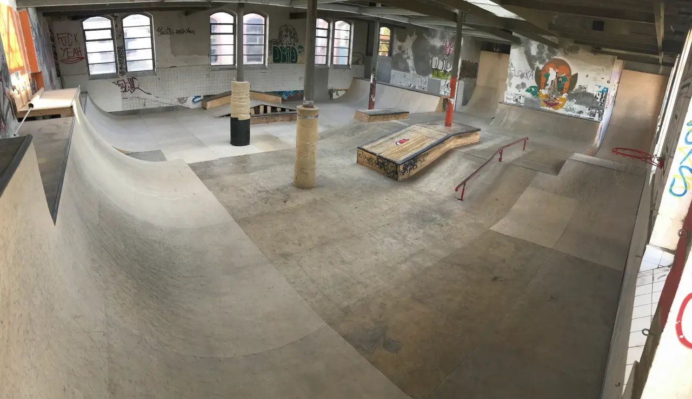

Skatepark couvert · La Chaux-de-Fonds
Construit à la main, par ses bénévoles.
Depuis 2003
Skate, trottinette freestyle, roller et BMX dans les anciens abattoirs municipaux : le seul skatepark couvert du canton de Neuchâtel.

= 75rem) 60rem, 100vw" width="1280" height="739" alt="Vue d’ensemble du skatepark rénové : grandes courbes en bois à gauche, poteaux du bâtiment, module en bois au centre et main courante rouge, sous les fenêtres cintrées des anciens abattoirs." />Vue 1 Le park après les rénovations (photo publiée sur le site actuel en 2026).
- A courbe
- B poteau
- C module en bois
- D main courante
Révision · 2026
Fin des rénovations et réouverture au public
Après des mois de rénovations, nous avons le plaisir de vous annoncer que le Skatepark est de nouveau réouvert au public. Les horaires restent inchangés (me, sa, di de 14h à 18h).
Vous pouvez suivre plus d’informations sur notre page Instagram.
Coupe B · L’association
Une vingtaine de membres, un park fait main
L’association Park N’Sun a pour objectif la promotion des sports de glisse urbains tels que le skateboard, le scooter (trottinette freestyle), le roller ou le BMX. Elle regroupe une vingtaine de membres âgés de 12 à 45 ans.
Pour lui permettre d’atteindre son but, les membres de l’association construisent, entretiennent et gèrent bénévolement un skatepark couvert dans les anciens abattoirs municipaux de La Chaux-de-Fonds depuis 2003. Le skatepark Park N’Sun reste la seule infrastructure couverte du canton de Neuchâtel qui leur est dédiée.
Les modules sont en bois, construits à la main par des bénévoles.

Vue 2 StreetDay 2021, au skatepark. Photo : @SteveVisinand.
Coupe C · L’histoire du nom
Park’n Sun : le froid, et la lampe
À l’époque, le bâtiment était mal isolé. En hiver, il faisait si froid que les riders grelottaient et plaisantaient qu’ils avaient « Parkinson ». Au-dessus des gradins, une énorme lampe chauffait fort : c’était « le soleil du skatepark ».
Les deux ont donné Park’n Sun. Depuis les rénovations, il fait chaud même en hiver, et la lampe a disparu.
[À FOURNIR : année et témoins de l’anecdote, photos de la lampe et des gradins]
Nomenclature · Qui cherche quoi
Par où entrer
-
Riders
Les horaires, les prochains events et le compte Instagram.
-
Anciens
L’histoire du park, du nom, et l’hommage au bowl.
-
Parents
Les cours, la sécurité et la réservation pour un anniversaire.
-
Ville, marques
Les partenariats, la rénovation et Capitale culturelle 2027.
- Projets
- Partenaires · bientôt
Planche 03 · Hommage
Le bowl, définitivement fermé
Depuis 2013, un bowl, sorte de bassin aux parois recourbées, a été érigé dans un local annexe de 180 m², conçu et construit par les membres de l’association. Il est définitivement fermé. Sa planche le raconte en 3D, le long d’une ligne de ride.
Carnet de chantier · En préparation
Ce qui arrive
-
Capitale culturelle 2027
Le projet des anciens abattoirs. [À FOURNIR : description du projet, rôle de Park N’Sun, dates, liens officiels]
-
El Tony Mate
Collaboration : El Tony Mate est vendu au skatepark. [À FOURNIR : nature de la collaboration, prix, visuels, accord pour le nom et le logo]
-
Partenaires
[À FOURNIR : liste officielle des partenaires, logos et autorisations]
Vue 3 · Vidéo
Le park en mouvement
[À FOURNIR : vidéo de Léo]
Cadre 16:9